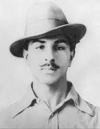

Bhagat Singh
(1907-1931)
Member of Hindustan Socialist Republican Association (HSRA):
Bhagat Singh was a prominent member of the HSRA, a revolutionary organization in British India that aimed to overthrow British rule through armed struggle.
Kakori Conspiracy (1925):
Bhagat Singh and his associates were involved in the Kakori Conspiracy, a train robbery that aimed to fund the revolutionary activities against the British government.
Assembly Bombing Incident (1929):
Bhagat Singh and Batukeshwar Dutt threw non-lethal bombs in the Central Legislative Assembly in Delhi to protest against repressive laws. They were arrested and subsequently tried for the incident.
Inquilab Zindabad:
Bhagat Singh popularized the slogan "Inquilab Zindabad" (Long Live the Revolution), which became a rallying cry for the independence movement.
Jallianwala Bagh Massacre (1919):
Though not directly involved, Bhagat Singh was deeply affected by the Jallianwala Bagh massacre in Amritsar, which fueled his passion for the freedom struggle
Role in the Simon Commission Protest:
Bhagat Singh actively participated in the protests against the Simon Commission, which was perceived as an insult to the Indian people as it did not include any Indian members.
Lahore Conspiracy Case (1929):
Bhagat Singh was arrested and tried in the Lahore Conspiracy Case along with his associates for his involvement in the assembly bombing incident. He used the trial as a platform to promote his revolutionary ideals and beliefs.
Hunger Strike in Jail:
While in prison, Bhagat Singh and his fellow inmates went on a hunger strike to protest against the inhumane treatment of political prisoners. The hunger strike lasted for 116 days, and it gained widespread attention and support.
Execution and Martyrdom (1931):
hagat Singh, along with Rajguru and Sukhdev, was sentenced to death for their involvement in the killing of British police officer James A. Saunders. They were executed on March 23, 1931, in Lahore Central Jail. Their martyrdom had a profound impact on the Indian independence movement, inspiring generations of Indians to continue the struggle for freedom.
Biographies
- "Bhagat Singh: A Biography" by J. C. Mathur
- "Bhagat Singh: The Man and His Ideas" by Irfan Habib
- "Bhagat Singh: Making of a Revolutionary" by K. L. Garg
- "The Jail Diary of Bhagat Singh" by Bhagat Singh (Author), Bhupender Hooja (Editor)
- "Bhagat Singh: The Eternal Rebel" by Malwinder Jit Singh Waraich
- Shaheed Bhagat Singh: Unique Martyr in Freedom Movement" by A. C. Banerjee